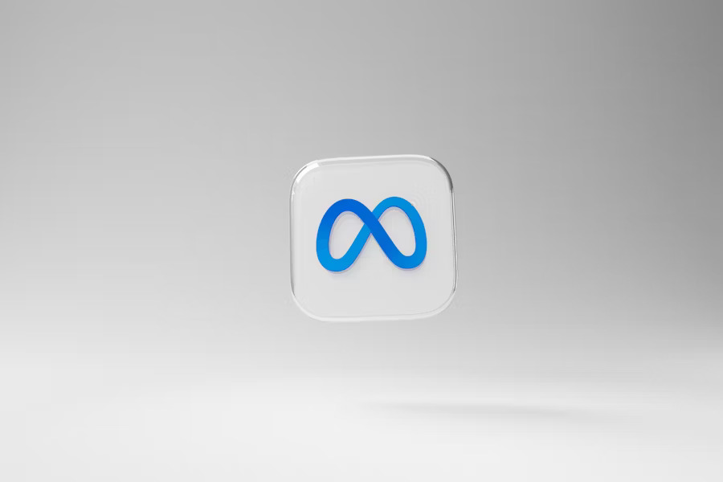

I dagens digitale landskap har bedrifter tilgang til en rekke annonseringsplattformer for å nå sine målgrupper. To av de mest populære alternativene er Google Ads og Meta-annonsering (Facebook og Instagram). Selv om begge plattformene gir fantastiske muligheter for synlighet og konverteringer, er det viktig å forstå deres forskjeller for å avgjøre hva som er riktig for din bedrift.
Google Ads: Fang oppmerksomheten til de som søker aktivt

Google Ads er en plattform som lar bedrifter annonsere på Googles søkemotor og tilknyttede nettverk. Den største fordelen med Google Ads er at du når folk som aktivt leter etter produkter eller tjenester.
Fordeler med Google Ads
- Hensiktsstyrt trafikk: Annonsene vises til brukere som allerede er interessert i det du tilbyr.
- Fleksibel målretting: Du kan velge nøkkelord, geografisk plassering og demografi.
- Måle resultater: Detaljerte analyser lar deg overvåke klikk, konverteringer og avkastning på investering (ROI).
Meta-annonsering: Bygg merkevarebevissthet og skap engasjement
- Visuelt tiltalende annonser: Bruk bilder og videoer for å fortelle din historie.
- Engasjer målgruppen: Oppfordre brukere til å like, kommentere og dele.
- Presis målretting: Segmenter målgrupper basert på interesser, adferd og livsstil.
Hvordan velge riktig plattform?
Valget mellom Google Ads og Meta-annonsering avhenger av målene dine.
- Hvis målet er øyeblikkelige konverteringer, bør du velge Google Ads.
- Hvis målet er merkevarebygging og engasjement, er Meta-annonsering et bedre valg.
Kombinasjonen er nøkkelen
I mange tilfeller gir en kombinasjon av begge plattformene de beste resultatene. For eksempel kan du bruke Google Ads for å drive salg og Meta-annonsering for å styrke merkevaren.
Kontakt
Jeg er en erfaren digital markedsfører, og jeg vil hjelpe deg å forbedre engasjementet i virksomheten din. Du kan kontakte meg via e-post: anna.yatskiv.0704@gmail.com